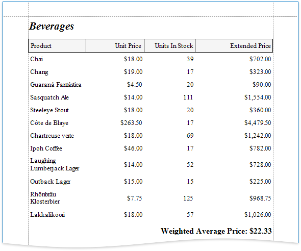
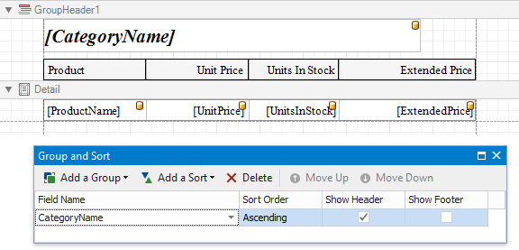
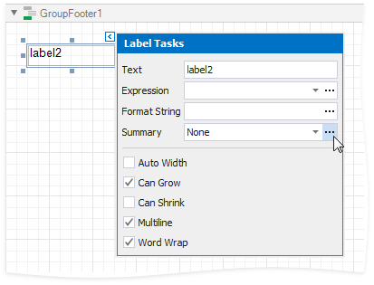
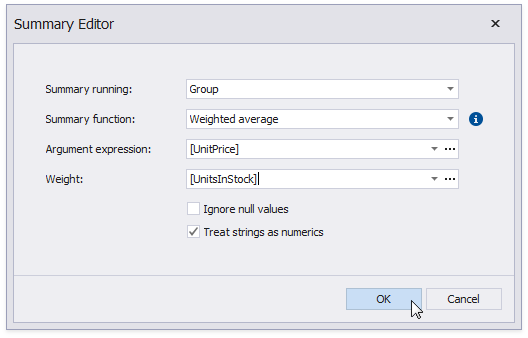

Calculate a Weighted Average

Follow the steps below to calculate a weighted average:
Bind a report to a required data source.
Group the report's data using the Group and Sort Panel and construct a layout like the following:

Add the Group Footer band to the report and drop a Label control on this band to display the summary result. Click the label's smart tag, then click the Summary field's ellipsis button.

In the invoked Summary Editor window:
- Set the Summary Running property to Group.
- Set the Summary Function property to Weighed average.
- Set the Argument Expression property to the field to count the weighted average on, and the Weight property to the field that provides weights.

You can also use the control's Format String property to format the summary value. For instance, set this property to Weighted Average Price: {0:c2}.